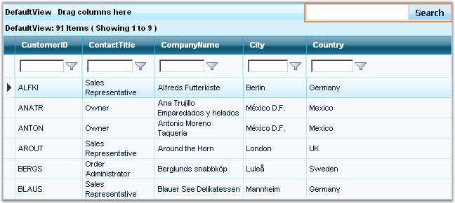
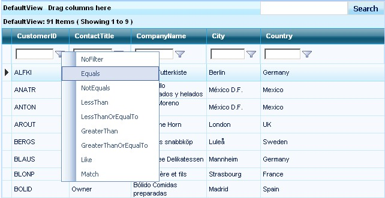

GridFilterBarTextCell
The GridFilterBarTextCell provides an intuitive way for the users to apply filtering in the GridGroupingControl. It can also be used for custom filtering with LINQ objects. It supports ActiveFilteringMode, which allows the filtering to happen when the user enters the data in the filter text field.
Usage
All you have to do is set the following properties and enable the filter text cell.
|
[ASPX]
<TableDescriptor AllowFilter="true" /> <TopLevelGroupOptions ShowFilterBar="true" ShowFilterBarTextCell="true" AllowActiveFilteringMode="true" /> |

Figure 80
When the ActiveFilteringMode is set to False, some default set of filtering options will be provided in the UI, with menus popping up.

Figure 81
Client-Side Model
The GridFilterTextCell uses full ASP.NET AJAX client model. It has the following client-side properties which can be used dynamically.
· get_activeFilteringMode – Gets the current active filtering mode for the FilterTextCell.
· set_activeFilteringMode – sets the current active filtering mode for the FilterTextCell.
Other properties that are used are meant to be internal in the FilterTextCell.
Server-Side Model
It provides a FilterTextChanged event that can be used on the server-side for providing custom filtering.
|
[C#]
this.GridGroupingControl1.FilterTextChanged += new EventHandler<FilterTextChangedEventArgs>(GridGroupingControl1_FilterTextChanged);
void GridGroupingControl1_FilterTextChanged(object sender, FilterTextChangedEventArgs args) { if ( args.Column.Name == "CustomerID" ) { args.Cancel = true; //provide your filtered datasource here, use LINQ or SQL statements } } |
|
[VB.NET]
AddHandler Me.GridGroupingControl1.FilterTextChanged, AddressOf GridGroupingControl1_FilterTextChanged
this.GridGroupingControl1.FilterTextChanged += new EventHandler<FilterTextChangedEventArgs>(GridGroupingControl1_FilterTextChanged);
Private Sub GridGroupingControl1_FilterTextChanged(ByVal sender As Object, ByVal args As Syncfusion.Web.UI.WebControls.Grid.Grouping.FilterTextChangedEventArgs) If args.Column.Name = "CustomerID" Then 'provide your filtered datasource here, use LINQ or SQL statements args.Cancel = True End If End Sub |